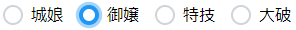
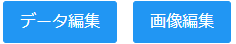
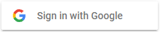

実装済みキャラクターの一覧ページです。
キャラクターアイコンをクリックすることで、そのキャラクターの個別ページに遷移します。すべてのキャラクターの情報を確認できますが、未所持のキャラクターはのように暗く表示されます。
また、 から、グリッド表示モードとテーブル表示モードとを切り替える事が出来ます。テーブル表示モードではキャラクターの詳細情報が表示されます。
から、グリッド表示モードとテーブル表示モードとを切り替える事が出来ます。テーブル表示モードではキャラクターの詳細情報が表示されます。
キャラクターの絞り込みや並び替えは

 から行うことができます。
から行うことができます。
テーブルモードで表示されるチェックボックスにチェックすることで「キャラクター編成」メニューで表示する各編成にキャラクターを登録出来ます。

キャラクター編成メニューです。
キャラクター一覧で登録したキャラクターの情報を一覧で確認しながら、キャラクターの順番を入れ替えることができます。
ゲーム上の編成枠(8人)以上のキャラクターを登録できるので、ある程度多めに登録しておいて性能を比較しながら実際に編成するキャラクターを選んでいくような使い方を想定しています。
キャラクター順序の入れ替えは、PCの場合はドラッグアンドドロップで、モバイルの場合はから行います。
また、キャラクターのアイコン画像右上のをクリックすることでキャラクターを編成から削除します。
※表示されるキャラクター情報はキャラクターの改築状況に応じて改築前後いずれか一方のみが表示されます。改築状況の登録は「キャラクター改築状況」ページから行えます。
キャラクター情報と画像を確認することができます。
から表示画像を切り替えます。
からキャラクターの所持ステータスを変更できます。
性能情報や画像の変更はから行います。
キャラクターの所持状況を一括設定します。
所持状況を登録しておくことで、「キャラクター一覧」ページ等での絞り込みに利用できます。
※ページを切り替えると編集内容が消えます。ページごとに保存をしてください。
キャラクターの改築状況を一括設定します。
改築状況を登録しておくことで、「キャラクター編成」ページで表示する情報が切り替わります。
※ページを切り替えると編集内容が消えます。ページごとに保存をしてください。
更新情報です。機能追加やバグ修正の内容をまとめています。
をクリックすると過去のバージョンの情報を表示できます。
管理人にメッセージを送ることが出来ます。
不具合の報告や機能改善の要望などがあれば使ってください。
アプリで管理しているユーザーごとデータ（キャラクター所持状況や改築状況のデータ等）を削除します。
復旧は出来ないので注意してください。
本ウェブアプリの概要やメニューごとの使い方を説明しています。
プライバシーポリシーです。匿名IDだけ参照してます。
引用元のゲームコンテンツや開発に使用したライブラリ等についてまとめています。
ログインページです。
をクリックすることで本ウェブアプリにログインできます。
※事前にGoogleアカウントの作成が必要です。